Model Equality Testing:
Which Model Is This API Serving?
Abstract
Users often interact with large language models through black-box inference APIs, both for closed- and open-weight models (e.g., Llama models are popularly accessed via Amazon Bedrock and Azure AI Studios). In order to cut costs or add functionality, API providers may quantize, watermark, or finetune the underlying model, changing the output distribution — often without notifying users. We formalize detecting such distortions as Model Equality Testing, a two-sample testing problem, where the user collects samples from the API and a reference distribution, and conducts a statistical test to see if the two distributions are the same. We find that tests based on the Maximum Mean Discrepancy between distributions are powerful for this task: a test built on a simple string kernel achieves a median of 77.4% power against a range of distortions, using an average of just 10 samples per prompt. We then apply this test to commercial inference APIs for four Llama models, finding that 11 out of 31 endpoints serve different distributions than reference weights released by Meta.
1 Introduction
Since running a large language model requires compute and technical expertise, many users rely on black-box APIs to handle inference. This reliance applies to both closed-weight models, like GPT and Claude, and open-weight ones: for example, Amazon Bedrock, Microsoft Azure, and the seven other companies in Figure 1 all compete to offer Llama models as a service. While users can sample from black-box APIs, they have little to no insight into the underlying implementation of the model, including into questions like:
-
1.
How has the API modified the language model’s distribution? To drive down costs, API providers may quantize or prune large model weights; they may also watermark outputs or incorrectly implement some decoding parameters. These changes distort the resulting distribution of completions. The problem is when such distortions are undisclosed: users assume that calling a third-party API is exactly equivalent to working with the original model. For example, benchmarks like HELM (Liang et al., 2022) evaluate models through third-party APIs, but quantized or watermarked models may be less capable than the intended model. Can we test if an API’s distribution differs from reference weights, and if so, by how much?
-
2.
Is the API changing over time? Language model inference endpoints may also drift over time without notifying users (Chen et al., 2023; Eyuboglu et al., 2024), e.g., due to finetuning or updates to the inference stack. Unstable APIs affect research reproducibility (Pozzobon et al., 2023) and can disrupt user productivity in human-AI teams (Bansal et al., 2019). Can we track if a black-box API’s distribution has changed over time?
These concerns are important to address: tens of thousands of developers already rely on black-box inference APIs for applications (Amazon, 2024), and this dependence will increase as LLMs — and the corresponding infrastructure costs for hosting — grow larger. For example, most users must rely on third-party APIs to use Llama 3.1 405B because of its size.
The current approach to this problem is for an outside auditor to monitor APIs’ accuracies on multiple-choice or short-answer benchmarks (ArtificialAnalysis, 2024); these studies typically decode from the language model greedily. Such audits can be a poor match for a particular user’s needs. Greedy decoding only checks that the modes of the next-token distributions match, rather than the overall distribution over completions. This limitation is problematic because users often sample from models. Further, short-answer benchmarks cover only a small slice of possible prefixes, which may significantly differ from users’ applications: common applications like code generation, dialogue, and summarization are longform tasks. Ideally, users would be able to personally audit APIs on their custom applications. Such a method should be sample-efficient, apply to tasks without clear evaluation metrics, and assess with confidence whether the overall distribution of completions has shifted in a statistically significant way.
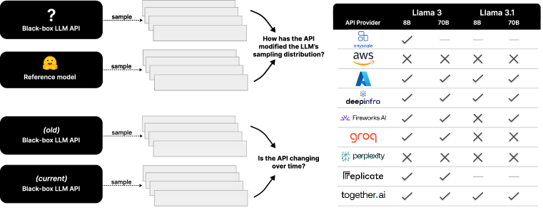
We provide such a method. Suppose a user wants to audit a an API on their task of interest. The user collects two samples: one from a reference distribution and one from the test API’s distribution . For example, to answer if an API has modified the distribution of an open-weight model, might be from reference model weights released on Hugging Face. To answer if the API is changing over time, might be from the API at an earlier point in time (Figure 1 left). The user then conducts a two-sample test for whether to examine if the API’s distribution is statistically indistinguishable from the reference.
Our setting is challenging because the distributions being compared are high-dimensional: they are defined over multi-token completions from large vocabularies. We show that two-sample kernel tests based on estimating the Maximum Mean Discrepancy (MMD) between and (Gretton et al., 2012) are powerful tools for this setting, as kernel tests allow us to specify a featurization that reduces dimensionality. We find that a simple string kernel based on the Hamming distance between completions works particularly well with few samples. In simulations (§4), this test achieves a median of 77.4% power against a wide range of distortions — e.g., quantization, watermarking, and finetuning — using an average of just 10 samples per prompt for distributions over 20–25 prompts. We then apply this test to nine commercial inference API providers across four Llama models (§5, Figure 1 right). Our test flags 11 out of these 31 endpoints.
Because our test statistic is an estimate of a distance, we also explore how this same machinery can be used to quantify statistical distances between black-box endpoints. In §4.3, we estimate pairwise distances between the output distributions of 13 different language models — without requiring log probability access — and find that models within the same family (e.g., the Llama family, GPT-3.5 family, or GPT-4o family) output more similar distributions than models within the same size range (e.g., 7B or 70B models). In §5, we apply this method to estimate the effect size of deviations between API endpoints and reference weights, finding that some deviations are quite serious: some APIs’ implementations are further from the reference weights than if the provider had substituted in an entirely different language model.
In summary, our contributions are as follows: we unify several API auditing tasks under the formalization of Model Equality Testing, a two-sample distribution testing problem, and extensively empirically validate kernel-based tests for this problem. We then apply this test to audit popular commercial inference APIs. To enable users to audit APIs for custom applications, we open-source a Python package. We also aim to encourage future research in Model Equality Testing by releasing a dataset of 1 million LLM completions from five models.111Package, experiment code, and dataset: https://github.com/i-gao/model-equality-testing.
2 The Model Equality Testing problem
Suppose an auditor is interested in a task parameterized by a distribution over prompts and a maximum completion length of tokens. The auditor has sample access to a reference distribution and API distribution , both operating on the same vocabulary and with the same decoding parameters. The auditor samples prompt-completion pairs222In Appendix C.4, we discuss how to extend this setup to unequal sample sizes. from each distribution:
| (1) | ||||
We wish to use these samples to test if , i.e., distinguish between the hypotheses
| (2) | ||||
We require that the Type-1 error rate is controlled at . A good test will maximize power against unknown and generalize across several language models and prompt distributions . We are particularly interested in sample-efficient tests that are cheap to run: such tests are powerful when is small compared to the size of the vocabulary and the maximum completion length .333As a concrete example, Llama-3 uses a vocabulary size of , and users often sample tokens for longform generation tasks. These parameters modulate the size of the space that the joint distributions are defined over: the set of all prompt-completion pairs has size , where is the number of prompts captured in . Effective tests must navigate this high-dimensional space well. Fortunately, we expect the distributions in practice to be lower-dimensional, as language typically only places significant mass on a small number of tokens at each position.
Throughout the paper, we will use to denote the count of object in string or sample , to denote the joint distribution of prompts and completions under , and to denote the joint distribution under .
3 Method
To tackle the problem, we employ a two-sample kernel test from Gretton et al. (2012). This test uses samples and to estimate the Maximum Mean Discrepancy (MMD) between and , which is a measure of the distance between the two distributions. Intuitively, if the estimated MMD is large, we reject the null hypothesis that .
The MMD is defined with respect to a unit-norm kernel function and its associated feature map . For our two joint distributions and , the MMD is defined as the squared distance between the expected features from each distribution:
| (3) | ||||
For simplicity, we select kernels of the form , where is a prompt-agnostic kernel over completions. Then .
To conduct a two-sample test with samples and , the test statistic is the empirical estimator of (3):
| (4) |
We can compute p-values by simulating the test statistic’s distribution under the null, i.e., by repeatedly sampling both and from and computing (4). Alternatively, to avoid drawing extra samples from , we can use the permutation procedure (Lehmann et al., 1986), at a potential cost to power. This procedure repeatedly shuffles samples between and to recompute the test statistic (Appendix A.2).
Kernel choice.
The choice of kernel determines the test’s semantics and power. For example, setting to be an indicator of whether is an accurate completion for leads to rejecting the null when result in substantially different task accuracies. However, because is relatively coarse, the MMD may be zero even when and are quite different, limiting the test’s power. At the other extreme are universal kernels, which guarantee that the MMD is zero if and only if (Gretton et al., 2012). One such universal kernel for strings is the computationally expensive all-substrings kernel (Borgwardt et al., 2006):
| (5) |
where is the number of times appears in . Another universal kernel is the one-hot kernel:
| (6) |
which results in a classical two-sample multinomial test between the joint distributions. While universal kernels can eventually detect differences between any with enough samples, they may have low power in the small-sample regime. For example, the one-hot MMD measures if there are more exact match collisions within or than between them, but in small samples, we may see no duplicate completions at all.
We posit that other string kernels, though not universal, provide more powerful features for testing with small samples. Specifically, we investigate a fast kernel related to the Hamming distance between completions:
| (7) |
where shorter than is right-padded with a special token. Intuitively, a test based on this kernel rejects if a significantly larger number of substitutions are needed to align completions between and than within each sample. The associated Hamming MMD is a pseudo-metric, as it is zero when and obeys the triangle inequality, but may not separate all distributions (Appendix A.1). Despite this limitation, we find in the following sections that this kernel is empirically effective and well-suited to common distortions we encounter with language models: quantization, watermarking, finetuning, and related distortions tend to result in large inter-sample Hamming distances.
4 Evaluating tests in simulations
In this section, we evaluate our test’s power using different kernels at checking equivalence between known pairs of distributions. Specifically, we evaluate if tests can detect when a language model has been quantized or watermarked (§4.1), finetuned (§4.2), or swapped out for a different model altogether (§4.3).
All experiments in this section are run on a longform language modeling task. The prompt distribution is a uniform distribution over random 100-character strings sampled from English, German, Spanish, French, and Russian Wikipedia (Box 4). The maximum completion length is , and we sample using temperature 1. Power is computed from Monte Carlo simulations. We estimate p-values by simulating the empirical distribution of the test statistic under the null times; in Appendix C, we validate that the permutation procedure results in the same trends.
To evaluate tests’ generalization across prompts, we repeat power experiments over ten different prompt distributions, where we resample 25 Wikipedia strings for each . All tests are conducted at a significance level of . Additional details can be found in Appendix B.
4.1 Detecting quantization and watermarking
In this section, the reference distribution represents weights published on Hugging Face inferenced at full precision. We evaluate if tests can distinguish from alternative distributions :
- •
-
•
Watermarked models. Some providers may watermark outputs so that they are later detectable as having been generated by the platform. We apply the watermarking algorithm from Kirchenbauer et al. (2023) with default bias of 2.5.
To test generalization across models, we repeat evaluations for 5 instruction-tuned models: Mistral 7B Instruct (Jiang et al., 2023), Llama-3 8B and 70B Instruct, and Llama-3.1 8B and 70B Instruct (Meta, 2024).
Tests. We compare three choices of kernels: the Hamming kernel (7), the all-substrings kernel (5), and the one-hot kernel (6). Additionally, we compare two tests from the multinomial testing literature (Balakrishnan & Wasserman, 2018; Bhattacharya & Valiant, 2015):
| (8) |
| (9) |
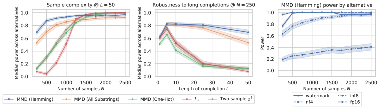
Results. Figure 2 (left) compares the empirical sample complexities of each test. To draw out a sample complexity curve, we vary the number of samples from to , where is the number of prompts in the prompt distribution. We observe that the Hamming MMD test attains the highest power with the fewest samples: at an average of 10 samples per prompt, this test has a median power of 77.4% across alternatives. In Figure 2 (right), we break down power by alternative distribution. The Hamming test is strong on all alternatives except fp16, where the initial power at is much smaller. This suggests that fp16 and fp32 differ in ways that are not captured by the Hamming kernel.
To accommodate user tasks which require very long completions, it is important that tests retain power as the completion length increases, even though the size of the sample space grows exponentially with . In Figure 2 (middle), we fix (i.e., ) and vary the completion length from 1 to 50 tokens. We observe that the Hamming MMD and all substring tests are more robust to increasing completion length than the other tests. This result is consistent with the intuition that a clever string kernel — as opposed to a one-hot kernel — can help MMD tests generalize to high-dimensional spaces.
4.2 Detecting finetuning
Given their effectiveness in detecting quantized and watermarked models, we next ask if MMD-based tests can detect when a model has been finetuned. We finetune Llama-3 8B Instruct on two datasets: a disjoint, i.i.d. split of the testing Wikipedia task, and an out-of-distribution code dataset (Chaudhary, 2023). We use a small learning rate of with AdamW (Loshchilov, 2017). We then use the Hamming MMD test to compare finetuned checkpoints to the original model as the reference distribution .
Figure 3 (upper left) plots power against the checkpoint number of the finetuned model. The Hamming MMD test is always able to detect finetuning with nontrivial (greater than 50%) power, even after a single epoch (42 optimization steps). One might expect that finetuning on the out-of-distribution code dataset would not affect the model’s distribution on the Wikipedia testing task, but we find this is not the case. Finetuning affects the model on other distributions enough to be detectable by statistical tests. These results suggest that it is challenging to isolate the effects of full finetuning to any single distribution, which may have implications for tasks such as unlearning or model editing (Hase et al., 2024).
4.3 Distinguishing if samples come from different language models
We next explore if the Hamming MMD test can distinguish whether two bodies of text are generated from the same language model. In this setting, and are two different language models, drawn from a pool of 13 instruction-tuned models (Figure 3 right), including eight open-weight models (Abdin et al., 2024; Groeneveld et al., 2024; Team et al., 2024) and and five OpenAI closed-weight models. In order to compare models with different tokenizers, samples must be compared in character space. We sample -token completions to the Wikipedia language modeling task as before, and then we decode these to characters, ignoring special tokens. The vocabulary of interest is now all Unicode characters ( 1.1M), the maximum completion length is characters, and we test with samples.
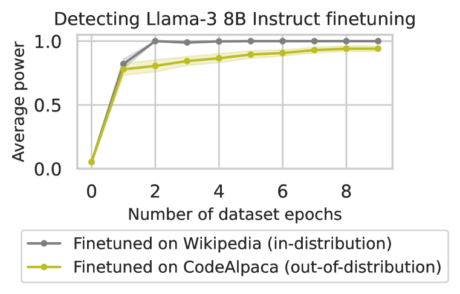
| Power | |
|---|---|
| Alternative | ( = Llama-3.1 8B) |
| Llama-3 8B | 0.76 |
| Llama-3 70B | 1.00 |
| Llama-3.1 70B | 0.75 |
| OLMo 7B | 1.00 |
| gpt-4o-mini | 1.00 |
| Llama-3.1 8B (watermark) | 0.32 |
| Llama-3.1 8B (int8) | 0.07 |
| Llama-3.1 8B (nf4) | 1.00 |
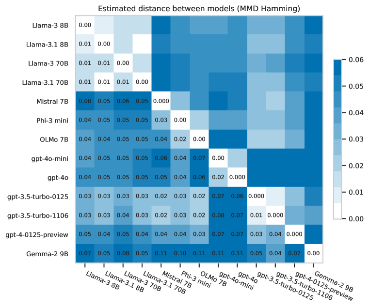
We find that all model swaps are detectable with 100% power, except for pairs within the Llama family, e.g., Llama-3.1 8B and Llama-3.1 70B (75% power) or Llama-3 8B and Llama-3.1 8B (76% power; Figure 3 lower left). Model swaps are significantly more detectable than watermarking or quantization. In Appendix D.2, we show qualitative examples of completions from different models.
Estimating distances between models.
A useful feature of the MMD tests is that the test statistic is an estimator of a distance. As a result, we can reuse the machinery to quantify the degree to which two models differ by estimating .444Note that the Hamming MMD is a pseudometric: does not imply (Appendix A.1). Figure 3 (right) estimates the Hamming MMD between all pairs of models. To decrease estimator error, we increase the sample size to samples from each model and report the average over simulations, along with standard errors. We observe that models within a family are typically clustered together, suggesting that training data, rather than scale, determines model similarity. Surprisingly, while generations of Llama models (3 and 3.1) are close in distance, some generations of GPT models (e.g., 4-preview and 3.5-turbo) are not. This result suggests the use of significantly different training data or procedures between these models.
5 Auditing inference API providers
As a case study, we now apply our test to 31 commercial inference endpoints for Meta’s Llama models (Figure 1). We seek to understand whether these APIs have modified the distribution of the underlying model. The 31 inference endpoints are distributed across four Llama models (instruction-tuned versions of Llama-3 8B and 70B, Llama-3.1 8B and Llama-3.1 70B) and nine providers: Amazon Bedrock, Anyscale,555We collected samples from Anyscale’s serverless endpoints from before they were deprecated in August 2024. Azure AI Studio, DeepInfra, Fireworks AI, Groq, Perplexity, Replicate, and Together.ai. Note that at the time of writing, only two companies publicize using distribution-altering optimizations: Fireworks AI notes that they employ semantic caching, and Together notes the use of quantization.666Sources: Fireworks AI home page, Together.ai product page
We are interested in whether APIs are indistinguishable from the model at commonly accepted precisions. Specifically, we consider two possible null distributions, both derived from model weights released by Meta on Hugging Face: is the full-precision model weights, and is the fp16-precision model weights. Our aim is to distinguish between the hypotheses
| (10) | ||||
To test this composite hypothesis, we collect three samples: and from the two null distributions, and from the API. We then conduct 2 two-sample tests, one for and another for , and obtain p-values and . We set the overall rejection rule to
| (11) |
This rule continues to control the FPR at under the composite null hypothesis: without loss of generality, suppose . Since , we have . Note that this rule may be pessimistic, reducing power.
Experiment details.
We consider testing with three prompt distributions . For all models, we test with one set of the Wikipedia completion task from §4, where is uniform over prompts, and tokens or around characters. For the smaller Llama-3 8B and Llama-3.1 8B models, we also test with the coding task HumanEval (Chen et al., 2021b) and instruction task UltraChat (Ding et al., 2023). Both are uniform over prompts, and tokens or characters. Because APIs often return decoded completions, rather than individual tokens, we conduct all tests in character space, as in §4.3. We explicitly requested all samples at temperature 1. Tests are conducted at level using samples. To reduce variance, we repeat tests over ten samples and fail endpoints if the average rejection rate is . For the most expensive endpoint (Azure’s Llama-3 70B), a Wikipedia audit costs $0.14, HumanEval $0.83, and UltraChat $0.93. For the cheapest endpoint (Fireworks’ Llama-3 8B), all three audits cost less than $0.02. For additional details, including the dates we collect API samples, see Appendix B.
| Wikipedia | HumanEval | UltraChat | ||||||
|---|---|---|---|---|---|---|---|---|
| 3 8B | 3.1 8B | 3 70B | 3.1 70B | 3 8B | 3.1 8B | 3 8B | 3.1 8B | |
| Amazon | ✓ | ✗ | ✓ | ✗ | ✓ | ✗ | ✗ | ✗ |
| Anyscale | ✓ | — | — | — | — | — | — | — |
| Azure | ✓ | ✓ | ✓ | ✓ | ✓ | ✓ | ✓ | ✓ |
| Deepinfra | ✓ | ✓ | ✓ | ✓ | ✓ | ✓ | ✓ | ✓ |
| Fireworks | ✓ | ✓ | ✓ | ✓ | ✓ | ✗ | ✓ | ✗ |
| Groq | ✓ | ✓ | ✓ | ✗ | ✓ | ✗ | ✓ | ✓ |
| Perplexity | ✗ | ✗ | ✗ | ✗ | ✗ | ✗ | ✗ | ✗ |
| Replicate | ✓ | — | ✗ | — | ✓ | — | ✓ | — |
| Together | ✓ | ✓ | ✓ | ✓ | ✓ | ✓ | ✓ | ✓ |
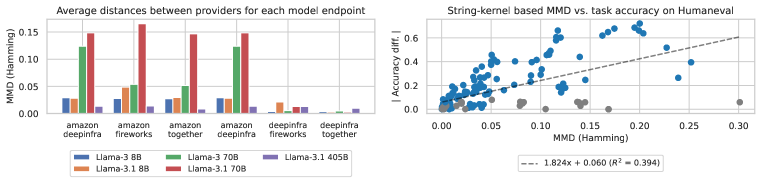
Results.
Despite power being generally reduced due to the composite decision rule, the test flags several endpoints (Table 1).777In Figure 1, we combine the results of the tests on the prompt distributions via a Bonferroni correction, setting the level of each test to and rejecting if the endpoint fails on any of the three prompt distributions. Notably, Amazon Bedrock and Perplexity have the most endpoints flagged, with the latter failing all tests. In Box 5, we include an example comparing samples from the fp32 null and Perplexity; these samples suggest that Perplexity serves a lower entropy distribution than the full-precision model. Additional qualitative samples can be found in Appendix D.3. The HumanEval and UltraChat prompt distributions elicit more failures than the Wikipedia distribution; this may be because these knowledge-intensive distributions are more sensitive to changes such as quantization.
To estimate the effect size of deviations, we estimate the MMD between providers and the nulls using ten bootstraps of samples each. We find that some deviations are quite large: some APIs’ implementations are further from the reference weights than if the provider had substituted in an entirely different language model. For example, the deviation between Perplexity’s Llama-3 8B and the fp32 null on the Wikipedia testing task is 0.03. This is comparable to the deviation between Llama-3 8B and GPT-3.5-Turbo (0.03; Figure 3 right), Phi-3 mini (0.04), or OLMo 7B (0.04).
Correlating MMD with task accuracy.
We now ask how well the Hamming MMD correlates with task accuracy when available. Automated evaluation exists for one of our prompt distributions, HumanEval. We find a moderate positive correlation between the absolute average accuracy difference and the Hamming MMD (Figure 4 right, ). In several cases, the MMD is high but the accuracy difference is low. These are often when both task accuracies are low: the gray points in the figure highlight pairs where both distributions have accuracy 10%. In these cases, the MMD captures that there are multiple ways to be wrong for a task. For example, the bottom-right-most point in the figure contrasts Llama-3.1 8B from Perplexity vs. the nf4 version; Perplexity answers with incorrect code snippets, while nf4 outputs nonsense completions (e.g., “simulation!!!!!!!!!![…]”). Samples from this comparison can be found in Appendix D.3.
Which models do providers differ on most?
Finally, we ask whether providers differ on some more models more than others. Figure 4 (left) estimates the MMD between providers for each model, and the large Llama-3.1 405B model. We find that deviations are larger on the earlier Llama models than the recent Llama-3.1 405B model.
6 Related work
Auditing ML APIs. Prior work audits APIs by monitoring benchmark performance. Most works focus on classifier APIs (Chen et al., 2021a; 2022), while work on language models has focused only on low-temperature decoding with multiple choice or short-answer tasks (ArtificialAnalysis, 2024; Chen et al., 2023; Eyuboglu et al., 2024). In contrast, we take a hypothesis testing approach to auditing language model APIs, emphasizing the sampling setting, and we quantify distances between string samples. This approach allows us to audit APIs on tasks that do not have crisp automatic evaluation metrics. In cryptography, a body of work has aimed to verify ML API predictions through proof protocols (Ghodsi et al., 2017; Feng et al., 2021; Liu et al., 2021; Kang et al., 2022; Weng et al., 2023; Lee et al., 2024). These methods require APIs to opt-in to providing proofs of valid inference alongside each prediction; public verifiers then check these proofs for correctness with perfect accuracy. Unfortunately, these methods require ongoing cooperation from the API provider, and they scale too poorly to apply to large language models: in Kang et al. (2022), generating a proof takes 41 minutes per prediction for a 68M parameter MobileNet (Sandler et al., 2018).
Two-sample testing. Testing whether two samples come from the same distribution is an established problem in statistics. A line of work focuses on testing multinomial distributions (Batu et al., 2013; Chan et al., 2014; Canonne, 2020), including when samples have unequal sizes (Bhattacharya & Valiant, 2015; Diakonikolas & Kane, 2016; Balakrishnan & Wasserman, 2018). MMD-based tests are a general approach that do not assume a specific distributional form (Gretton et al., 2012). These tests can be applied to structured data when paired with appropriate kernels (Lodhi et al., 2002; Borgwardt et al., 2006).
7 Conclusion
As the public grows more dependent on black-box APIs to interact with language models, tools for auditing these APIs are increasingly important. In this work, we unified several API auditing tasks under the formalization of Model Equality Testing, a two-sample distribution testing problem, and we extensively validated candidate tests for this problem. Future work could explore stronger tests than those we have presented, or explore how to adapt these tests to other modalities, such as image generation models. To help facilitate this research, we open-source the dataset of 1 million LLM completions used for this work at https://github.com/i-gao/model-equality-testing. This dataset contains completions from five models across quantized, watermarked, and API alternatives; also see Appendix B.1.
Acknowledgements
The authors would like to thank Mert Yuksekgonul, Steven Cao, Chenchen Gu, Chenglei Si, Nicole Meister, Yifan Mai, Simon Guo, Teddi Worledge, Yuhui Zhang, and other members of the Guestrin and P-Lambda labs for feedback on this paper.
Conflicts of interest
PL is a co-founder of Together AI; this work was done in his Stanford capacity. The topic, research, and results of this work were not shared with Together, or any other API provider evaluated, until the public release of the paper. IG and CG have no conflicts of interest with respect to the providers or developers evaluated in this paper.
References
- Abdin et al. (2024) Marah Abdin, Sam Ade Jacobs, Ammar Ahmad Awan, Jyoti Aneja, Ahmed Awadallah, Hany Awadalla, Nguyen Bach, Amit Bahree, Arash Bakhtiari, Harkirat Behl, et al. Phi-3 technical report: A highly capable language model locally on your phone. arXiv preprint arXiv:2404.14219, 2024.
- Amazon (2024) Amazon. Amazon 2024 q1 earnings. https://s2.q4cdn.com/299287126/files/doc_financials/2024/q1/AMZN-Q1-2024-Earnings-Release.pdf, 2024.
- ArtificialAnalysis (2024) ArtificialAnalysis. Artificial analysis, 2024. URL https://artificialanalysis.ai/.
- Balakrishnan & Wasserman (2018) Sivaraman Balakrishnan and Larry Wasserman. Hypothesis testing for high-dimensional multinomials: A selective review. 2018.
- Bansal et al. (2019) Gagan Bansal, Besmira Nushi, Ece Kamar, Daniel S Weld, Walter S Lasecki, and Eric Horvitz. Updates in human-ai teams: Understanding and addressing the performance/compatibility tradeoff. In Proceedings of the AAAI Conference on Artificial Intelligence, volume 33, pp. 2429–2437, 2019.
- Batu et al. (2013) Tuğkan Batu, Lance Fortnow, Ronitt Rubinfeld, Warren D Smith, and Patrick White. Testing closeness of discrete distributions. Journal of the ACM (JACM), 60(1):1–25, 2013.
- Bhattacharya & Valiant (2015) Bhaswar Bhattacharya and Gregory Valiant. Testing closeness with unequal sized samples. Advances in Neural Information Processing Systems, 28, 2015.
- Borgwardt et al. (2006) Karsten M Borgwardt, Arthur Gretton, Malte J Rasch, Hans-Peter Kriegel, Bernhard Schölkopf, and Alex J Smola. Integrating structured biological data by kernel maximum mean discrepancy. Bioinformatics, 22(14):e49–e57, 2006.
- Canonne (2020) Clément L Canonne. A survey on distribution testing: Your data is big. but is it blue? Theory of Computing, pp. 1–100, 2020.
- Chan et al. (2014) Siu-On Chan, Ilias Diakonikolas, Paul Valiant, and Gregory Valiant. Optimal algorithms for testing closeness of discrete distributions. In Proceedings of the twenty-fifth annual ACM-SIAM symposium on Discrete algorithms, pp. 1193–1203. SIAM, 2014.
- Chaudhary (2023) Sahil Chaudhary. Code alpaca: An instruction-following llama model for code generation. https://github.com/sahil280114/codealpaca, 2023.
- Chen et al. (2021a) Lingjiao Chen, Tracy Cai, Matei Zaharia, and James Zou. Did the model change? efficiently assessing machine learning api shifts. arXiv preprint arXiv:2107.14203, 2021a.
- Chen et al. (2022) Lingjiao Chen, Zhihua Jin, Evan Sabri Eyuboglu, Christopher Ré, Matei Zaharia, and James Y Zou. Hapi: A large-scale longitudinal dataset of commercial ml api predictions. Advances in Neural Information Processing Systems, 35:24571–24585, 2022.
- Chen et al. (2023) Lingjiao Chen, Matei Zaharia, and James Zou. How is chatgpt’s behavior changing over time? arXiv preprint arXiv:2307.09009, 2023.
- Chen et al. (2021b) Mark Chen, Jerry Tworek, Heewoo Jun, Qiming Yuan, Henrique Ponde de Oliveira Pinto, Jared Kaplan, Harri Edwards, Yuri Burda, Nicholas Joseph, Greg Brockman, Alex Ray, Raul Puri, Gretchen Krueger, Michael Petrov, Heidy Khlaaf, Girish Sastry, Pamela Mishkin, Brooke Chan, Scott Gray, Nick Ryder, Mikhail Pavlov, Alethea Power, Lukasz Kaiser, Mohammad Bavarian, Clemens Winter, Philippe Tillet, Felipe Petroski Such, Dave Cummings, Matthias Plappert, Fotios Chantzis, Elizabeth Barnes, Ariel Herbert-Voss, William Hebgen Guss, Alex Nichol, Alex Paino, Nikolas Tezak, Jie Tang, Igor Babuschkin, Suchir Balaji, Shantanu Jain, William Saunders, Christopher Hesse, Andrew N. Carr, Jan Leike, Josh Achiam, Vedant Misra, Evan Morikawa, Alec Radford, Matthew Knight, Miles Brundage, Mira Murati, Katie Mayer, Peter Welinder, Bob McGrew, Dario Amodei, Sam McCandlish, Ilya Sutskever, and Wojciech Zaremba. Evaluating large language models trained on code, 2021b.
- Cohere (2023) Cohere. Multilingual wikipedia (11-2023), 2023. URL https://huggingface.co/datasets/Cohere/wikipedia-2023-11-embed-multilingual-v3. Huggingface dataset.
- Dettmers et al. (2022) Tim Dettmers, Mike Lewis, Younes Belkada, and Luke Zettlemoyer. Gpt3. int8 (): 8-bit matrix multiplication for transformers at scale. Advances in Neural Information Processing Systems, 35:30318–30332, 2022.
- Dettmers et al. (2024) Tim Dettmers, Artidoro Pagnoni, Ari Holtzman, and Luke Zettlemoyer. Qlora: Efficient finetuning of quantized llms. Advances in Neural Information Processing Systems, 36, 2024.
- Diakonikolas & Kane (2016) Ilias Diakonikolas and Daniel M Kane. A new approach for testing properties of discrete distributions. In 2016 IEEE 57th Annual Symposium on Foundations of Computer Science (FOCS), pp. 685–694. IEEE, 2016.
- Ding et al. (2023) Ning Ding, Yulin Chen, Bokai Xu, Yujia Qin, Zhi Zheng, Shengding Hu, Zhiyuan Liu, Maosong Sun, and Bowen Zhou. Enhancing chat language models by scaling high-quality instructional conversations. arXiv preprint arXiv:2305.14233, 2023.
- Eyuboglu et al. (2024) Sabri Eyuboglu, Karan Goel, Arjun Desai, Lingjiao Chen, Mathew Monfort, Chris Ré, and James Zou. Model changelists: Characterizing updates to ml models. In The 2024 ACM Conference on Fairness, Accountability, and Transparency, pp. 2432–2453, 2024.
- Feng et al. (2021) Boyuan Feng, Lianke Qin, Zhenfei Zhang, Yufei Ding, and Shumo Chu. Zen: An optimizing compiler for verifiable, zero-knowledge neural network inferences. Cryptology ePrint Archive, 2021.
- Ghodsi et al. (2017) Zahra Ghodsi, Tianyu Gu, and Siddharth Garg. Safetynets: Verifiable execution of deep neural networks on an untrusted cloud. Advances in Neural Information Processing Systems, 30, 2017.
- Gretton et al. (2012) Arthur Gretton, Karsten M Borgwardt, Malte J Rasch, Bernhard Schölkopf, and Alexander Smola. A kernel two-sample test. The Journal of Machine Learning Research, 13(1):723–773, 2012.
- Groeneveld et al. (2024) Dirk Groeneveld, Iz Beltagy, Pete Walsh, Akshita Bhagia, Rodney Kinney, Oyvind Tafjord, Ananya Harsh Jha, Hamish Ivison, Ian Magnusson, Yizhong Wang, et al. Olmo: Accelerating the science of language models. arXiv preprint arXiv:2402.00838, 2024.
- Hase et al. (2024) Peter Hase, Thomas Hofweber, Xiang Zhou, Elias Stengel-Eskin, and Mohit Bansal. Fundamental problems with model editing: How should rational belief revision work in llms? arXiv preprint arXiv:2406.19354, 2024.
- Jiang et al. (2023) Albert Q Jiang, Alexandre Sablayrolles, Arthur Mensch, Chris Bamford, Devendra Singh Chaplot, Diego de las Casas, Florian Bressand, Gianna Lengyel, Guillaume Lample, Lucile Saulnier, et al. Mistral 7b. arXiv preprint arXiv:2310.06825, 2023.
- Kang et al. (2022) Daniel Kang, Tatsunori Hashimoto, Ion Stoica, and Yi Sun. Scaling up trustless dnn inference with zero-knowledge proofs. arXiv preprint arXiv:2210.08674, 2022.
- Kirchenbauer et al. (2023) John Kirchenbauer, Jonas Geiping, Yuxin Wen, Jonathan Katz, Ian Miers, and Tom Goldstein. A watermark for large language models. In International Conference on Machine Learning, pp. 17061–17084. PMLR, 2023.
- Kwon et al. (2023) Woosuk Kwon, Zhuohan Li, Siyuan Zhuang, Ying Sheng, Lianmin Zheng, Cody Hao Yu, Joseph Gonzalez, Hao Zhang, and Ion Stoica. Efficient memory management for large language model serving with pagedattention. In Proceedings of the 29th Symposium on Operating Systems Principles, pp. 611–626, 2023.
- Lee et al. (2024) Seunghwa Lee, Hankyung Ko, Jihye Kim, and Hyunok Oh. vcnn: Verifiable convolutional neural network based on zk-snarks. IEEE Transactions on Dependable and Secure Computing, 2024.
- Lehmann et al. (1986) Erich Leo Lehmann, Joseph P Romano, and George Casella. Testing statistical hypotheses, volume 3. Springer, 1986.
- Liang et al. (2022) Percy Liang, Rishi Bommasani, Tony Lee, Dimitris Tsipras, Dilara Soylu, Michihiro Yasunaga, Yian Zhang, Deepak Narayanan, Yuhuai Wu, Ananya Kumar, et al. Holistic evaluation of language models. arXiv preprint arXiv:2211.09110, 2022.
- Liu et al. (2021) Tianyi Liu, Xiang Xie, and Yupeng Zhang. Zkcnn: Zero knowledge proofs for convolutional neural network predictions and accuracy. In Proceedings of the 2021 ACM SIGSAC Conference on Computer and Communications Security, pp. 2968–2985, 2021.
- Lodhi et al. (2002) Huma Lodhi, Craig Saunders, John Shawe-Taylor, Nello Cristianini, and Chris Watkins. Text classification using string kernels. Journal of machine learning research, 2(Feb):419–444, 2002.
- Loshchilov (2017) I Loshchilov. Decoupled weight decay regularization. arXiv preprint arXiv:1711.05101, 2017.
- Meta (2024) AI Meta. Introducing meta llama 3: The most capable openly available llm to date. Meta AI, 2024.
- Panda (2024) Ashwinee Panda. Post by @pandaashwinee. discussion of quantization for llama 3.1. https://x.com/pandaashwinee/status/1816966288905998829, 2024.
- Pozzobon et al. (2023) Luiza Pozzobon, Beyza Ermis, Patrick Lewis, and Sara Hooker. On the challenges of using black-box apis for toxicity evaluation in research. arXiv preprint arXiv:2304.12397, 2023.
- Reddit (2024) Reddit. Post by user: mo4gv9eywmpmw3xr. result: Llama 3 exl2 quant quality compared to gguf and llama 2. https://www.reddit.com/r/LocalLLaMA/comments/1cfbadc/result_llama_3_exl2_quant_quality_compared_to/, 2024.
- Sandler et al. (2018) Mark Sandler, Andrew Howard, Menglong Zhu, Andrey Zhmoginov, and Liang-Chieh Chen. Mobilenetv2: Inverted residuals and linear bottlenecks. In Proceedings of the IEEE conference on computer vision and pattern recognition, pp. 4510–4520, 2018.
- Steinwart (2001) Ingo Steinwart. On the influence of the kernel on the consistency of support vector machines. Journal of machine learning research, 2(Nov):67–93, 2001.
- Team et al. (2024) Gemma Team, Thomas Mesnard, Cassidy Hardin, Robert Dadashi, Surya Bhupatiraju, Shreya Pathak, Laurent Sifre, Morgane Rivière, Mihir Sanjay Kale, Juliette Love, et al. Gemma: Open models based on gemini research and technology. arXiv preprint arXiv:2403.08295, 2024.
- Weng et al. (2023) Jiasi Weng, Jian Weng, Gui Tang, Anjia Yang, Ming Li, and Jia-Nan Liu. pvcnn: Privacy-preserving and verifiable convolutional neural network testing. IEEE Transactions on Information Forensics and Security, 18:2218–2233, 2023.
- Wolf et al. (2020) Thomas Wolf, Lysandre Debut, Victor Sanh, Julien Chaumond, Clement Delangue, Anthony Moi, Pierric Cistac, Tim Rault, Rémi Louf, Morgan Funtowicz, et al. Transformers: State-of-the-art natural language processing. In Proceedings of the 2020 conference on empirical methods in natural language processing: system demonstrations, pp. 38–45, 2020.
Appendix A Additional notes on tests
A.1 Which MMD kernels lead to valid metrics?
Recall that a metric on probability distributions satisfies (1) symmetry, (2) the triangle inequality, and (3) if and only if . On the other hand, a pseudo-metric satisfies the first two properties and has . Regardless of the kernel, the MMD as defined in Equation 3 is clearly symmetric. It also satisfies triangle inequality, since for any . The question left is whether our kernels make the MMD injective as in Condition 3.
-
•
One-hot kernel. (Gretton et al., 2012) prove that universal kernels (Steinwart, 2001) result in an injective MMD. (Borgwardt et al., 2006) show that a kernel defined on a finite domain is universal if satisfies strict positive definiteness: i.e., induces a nonsingular Gram matrix for any finite set of points . This is true if are linearly independent for any set of distinct points . For the one-hot kernel, the associated feature map is of length , where the th entry is an indicator for whether is equal to the th string. Since all is one-hot and for distinct sets , no two are both 1 at the same index, the are linearly independent. Therefore this kernel is universal, and is a valid metric.
-
•
All-substrings kernel. Borgwardt et al. (2006) (Theorem 2.7) prove that this kernel is universal, and thus the MMD is a metric.
-
•
Hamming kernel. We will show that the MMD is not injective by showing that the mean embedding is not injective, i.e., there exist with . For the Hamming kernel, the associated feature map is of length :
i.e., the mean embedding stacks all marginal distributions of . But this shows the mean embedding is not injective: we know that multiple joint distributions can map to the same marginal distributions. Thus the Hamming MMD is not injective, and it is only a pseudo-metric.
A.2 Simulating p-values
P-values for MMD tests may be simulated in two ways:
-
1.
Simulating the test statistic under the null (Algorithm 1). This is done by repeatedly sampling and from and caching . The p-value is then the proportion of times the test statistic is greater than or equal to the observed test statistic. We conduct tests using this method in the main text, reusing the same cached empirical distribution of the test statistic under the null for all alternatives at that sample size. Note that this method requires significant sampling access to .
-
2.
Permutation procedure (Lehmann et al. (1986); Algorithm 2). Given samples and , the permutation procedure randomly shuffles the labels of the samples and computes the test statistic on the permuted samples. This process is repeated many times to estimate the null distribution of the test statistic. The p-value is then the proportion of times the permuted test statistic is greater than or equal to the observed test statistic. This method does not require additional sampling access to but may have lower power. We conduct experiments using this method in Appendix C.5.
Appendix B Experiment details
B.1 Sampling and dataset details
All experiments were conducted by sampling with replacement from a pre-collected dataset of language model completions, which we release alongside this paper at https://github.com/i-gao/model-equality-testing. The dataset consists of completions from five models: mistralai/Mistral-7B-Instruct-v0.3, meta-llama/Meta-Llama-3-8B-Instruct, meta-llama/Meta-Llama-3.1-8B-Instruct, meta-llama/Meta-Llama-3-70B-Instruct, and meta-llama/Meta-Llama-3.1-70B-Instruct. We collected multiple completions per prompt for prompts from Wikipedia (Cohere, 2023), HumanEval (Chen et al., 2021b), and UltraChat (Ding et al., 2023). In total, our dataset contains 440 prompts: 80 from Wikipedia in each of English, Spanish, French, German, and Russian, as well as 20 from HumanEval and 20 from UltraChat. We repeated the collection process for each model at each precision (fp32, fp16, fp16, int8, and nf4) and when watermarked using the method in Kirchenbauer et al. (2023), as well as from each API audited in the paper. In total, this dataset size is 1.1M completions.
For the goodness-of-fit experiments in Appendix C.3, we collected completions for a disjoint set of 20 additional prompts from each of language of Wikipedia for Mistral 7B and Llama-3 8B. This set also includes the log probabilities of each sample under the full precision model. All other experiments outside of this goodness-of-fit experiment were conducted on the previous, larger dataset.
Details about local sampling (fp32, fp16, int8, nf4 4, and watermark).
We collected completions per prompt for the fp32 precision, and completions per prompt for the other precisions and watermarked alternatives. Local sampling was performed on a mix of RTX 6000, RTX 3090, Quadro RTX 8000, and A100 GPUs using a mixture of the Transformers (Wolf et al., 2020) and VLLM (Kwon et al., 2023) libraries. The watermarking, nf4, and int8 implementations are from the Transformers library. We use the default watermarking parameters of 2.5 bias and context width 1. All samples were collected with vanilla decoding parameters of temperature 1 without top-k or top-p sampling, and parameter max_new_tokens set to for Wikipedia and for HumanEval and UltraChat.
We used the default chat templates from the Transformers library for models. It was important for us to match the chat templates during local sampling to those we believe the APIs to use, as the chat templates can affect the completions generated. We confirmed that the number of tokens in our local rendering of the prompts matched the returned number of prompt tokens from API calls. The exception was for the Llama-3.1 models, where the default Transformers chat template includes the current date. We found that this template did not match the number of prompt tokens returned by APIs; however, the Llama-3 chat template did.888In October 2024, this behavior has changed for Together AI, which now uses the Llama-3.1 chat template that includes the current date. At the time we collected samples with the Llama-3 template, this was not the case. As a result, we used the Llama-3 chat template for Llama-3.1 models in our local sampling.
Details about API sampling.
API samples are collected by repeatedly querying endpoints for one completion at a time. We aimed to collect 250 completions per prompt for each API within a 24 hour window, but due to rate limits and request failures, some prompts had samples collected over multiple days. The dates we query each endpoint are listed in Tables 2 – 5. We query serverless endpoints offered by providers and use the same decoding parameters as for local sampling. When available, we called the providers using their Python packages; otherwise, we made raw HTTP requests.
Below are provider-specific details:
-
•
Anyscale. Because Anyscale deprecated its endpoints during our data collection in August 2024, we were only able to collect samples from their Llama-3 8B endpoint for Wikipedia.
-
•
Together. We collected Llama-3 8B and 70B samples from Together.ai before they introduced separate reference, turbo, and lite endpoints. We collected Llama-3.1 8B, 70B, and 405B from the turbo endpoints, which was the only option available at the time of collection.
| Model | Dataset | Provider | Dates queried |
| 3 8B | Wikipedia | Anyscale | 7/4 |
| Amazon | 7/8, 8/1 | ||
| Azure | 8/19-20, 8/24 | ||
| Deepinfra | 7/4, 8/1 | ||
| Fireworks | 7/4, 7/19 | ||
| Groq | 7/4, 8/1-4, 8/8 | ||
| Perplexity | 7/4 | ||
| Replicate | 7/4, 7/19 | ||
| Together | 7/4 | ||
| HumanEval | Amazon | 7/29 | |
| Azure | 8/24 | ||
| Deepinfra | 8/1 | ||
| Fireworks | 8/1, 8/12 | ||
| Groq | 8/4, 8/24 | ||
| Perplexity | 8/12 | ||
| Replicate | 8/1 | ||
| Together | 8/1, 8/12 | ||
| UltraChat | Amazon | 7/29 | |
| Azure | 8/24 | ||
| Deepinfra | 8/1 | ||
| Fireworks | 8/1, 8/12 | ||
| Groq | 8/4, 8/24 | ||
| Perplexity | 8/12 | ||
| Replicate | 8/1-2 | ||
| Together | 8/1, 8/12 |
| Model | Dataset | Provider | Dates queried |
|---|---|---|---|
| 3.1 8B | Wikipedia | Amazon | 8/1 |
| Azure | 8/19-21, 8/23-24 | ||
| Deepinfra | 8/1-2 | ||
| Fireworks | 7/26-27, 8/6 | ||
| Groq | 8/1-4, 8/8-11, 8/24-26 | ||
| Perplexity | 8/1-2 | ||
| Together | 7/26-27, 8/6-8 | ||
| HumanEval | Amazon | 8/1 | |
| Azure | 8/24 | ||
| Deepinfra | 7/31 | ||
| Fireworks | 7/30 | ||
| Groq | 7/31, 8/24, 8/27 | ||
| Perplexity | 7/30 | ||
| Together | 7/30 | ||
| UltraChat | Amazon | 7/26-27, 8/1, 8/6 | |
| Azure | 8/24 | ||
| Deepinfra | 7/31 | ||
| Fireworks | 7/26, 7/30, 8/6 | ||
| Groq | 7/31-8/1, 8/27 | ||
| Perplexity | 7/30 | ||
| Together | 7/26-27, 7/30, 8/6 |
| Model | Dataset | Provider | Dates queried |
|---|---|---|---|
| 3 70B | Wikipedia | Amazon | 7/8, 8/1 |
| Azure | 8/19-21, 8/24 | ||
| Deepinfra | 7/4, 8/5-6 | ||
| Fireworks | 7/4, 7/31-8/1 | ||
| Groq | 7/4, 7/31, 8/2-13 | ||
| Perplexity | 7/4, 7/8, 8/5-6 | ||
| Replicate | 7/4, 7/19, 7/31-8/1 | ||
| Together | 7/4, 7/31-8/1 | ||
| HumanEval | Amazon | 7/29 | |
| Azure | 8/24 | ||
| Deepinfra | 8/1 | ||
| Fireworks | 8/6 | ||
| Groq | 8/1 | ||
| Perplexity | 8/6 | ||
| Replicate | 8/6 | ||
| Together | 8/6, 8/24 | ||
| UltraChat | Amazon | 8/24 | |
| Azure | 8/25-26 | ||
| Deepinfra | 8/1-2 | ||
| Fireworks | 8/6-7, 8/24 | ||
| Groq | 8/1-2, 8/4, 8/24 | ||
| Perplexity | 8/6, 8/24 | ||
| Replicate | 8/6 | ||
| Together | 8/6, 8/24 |
| Model | Dataset | Provider | Dates queried |
|---|---|---|---|
| 3.1 70B | Wikipedia | Amazon | 8/2 |
| Azure | 8/24 | ||
| Deepinfra | 8/2 | ||
| Fireworks | 7/27-28, 8/2, 8/5-6 | ||
| Groq | 8/2-5, 8/8-11, 8/21-24 | ||
| Perplexity | 8/2, 8/6 | ||
| Together | 7/27-28, 8/6 | ||
| HumanEval | Amazon | 8/24 | |
| Azure | 8/24, 8/26 | ||
| Deepinfra | 7/31 | ||
| Fireworks | 7/30 | ||
| Groq | 7/31, 8/1-2, 8/24 | ||
| Perplexity | 7/30-31 | ||
| Together | 7/30, 8/6 | ||
| UltraChat | Amazon | 8/24-25 | |
| Azure | 8/25-26 | ||
| Deepinfra | 7/31 | ||
| Fireworks | 7/30 | ||
| Groq | 7/31-8/1, 8/24 | ||
| Perplexity | 7/30-31 | ||
| Together | 7/30, 8/6 |
| Model | Dataset | Provider | Dates queried |
|---|---|---|---|
| 3.1 405B | Wikipedia | Amazon | 8/16-17, 8/23-24 |
| Deepinfra | 8/16, 8/23-24 | ||
| Fireworks | 8/16, 8/23-24 | ||
| Together | 8/16, 8/20, 8/23-24 | ||
| HumanEval | Amazon | 8/24-25 | |
| Deepinfra | 8/24 | ||
| Fireworks | 8/24 | ||
| Together | 8/24 | ||
| UltraChat | Amazon | 8/24-25 | |
| Deepinfra | 8/24-25 | ||
| Fireworks | 8/24 | ||
| Together | 8/24 |
| Model | Dates queried |
|---|---|
| gpt-4o-mini | 8/21, 8/23-24 |
| gpt-4o | 8/29 |
| gpt-3.5-turbo-0125 | 8/29 |
| gpt-3.5-turbo-1106 | 8/29 |
| gpt-4-0125-preview | 8/29 |
B.2 Monte carlo simulations
To construct the ten Wikipedia prompt distributions in §4, we randomly sampled 25 prompts per distribution from the Wikipedia prompts in our dataset. The HumanEval and UltraChat prompt distributions were constructed by using all available prompts from those sources.
In most experiments, we estimated power as the average rejection rate over 100 simulations, where we sample a fresh and each time. We simulated p-values by sampling datasets and from and computing the test statistic on each pair, and then we reused this empirical distribution when testing against all alternatives for the same . The exception is for the MMD all-substrings test statistic: because this was exceptionally slow to compute, we simulated p-values using 100 samples instead of 1000, and we estimated power from 20 simulations instead of 100.
Appendix C Additional results
C.1 Sample-complexity and length
This appendix includes additional results from §4.1. Figures 5, 6, and 7 stratify the sample complexity and completion length results by the alternative distribution and model.
Table 8 shows the power of the Hamming MMD test to distinguish between pairs of models (and other alternatives) in character space. In general, moving to this higher-dimensional space decreases the power of the test.
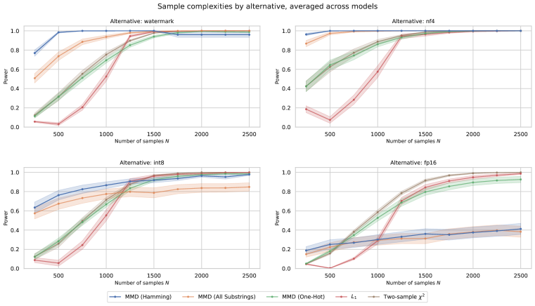
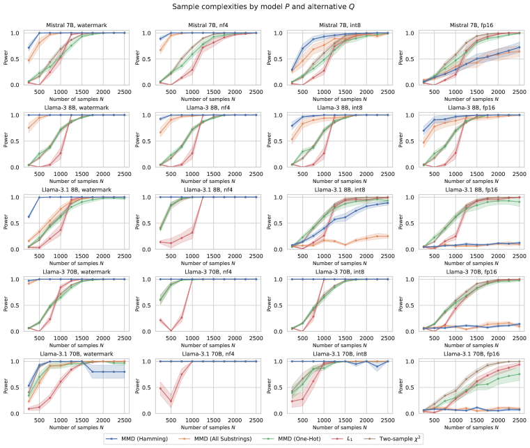
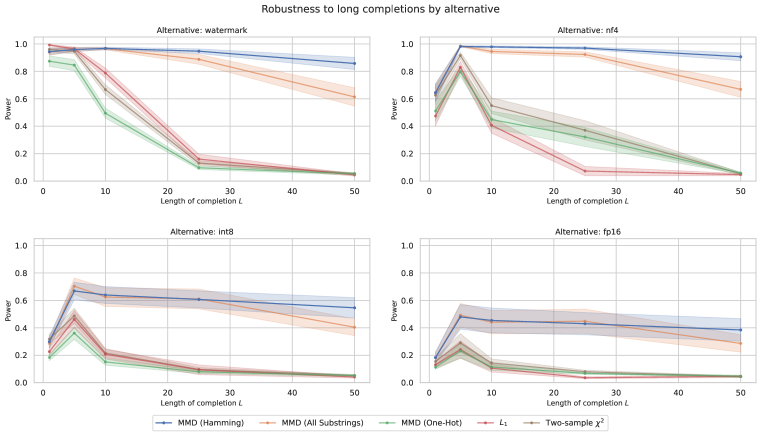
| Mistral 7B | 3 8B | 3.1 8B | 3 70B | 3.1 70B | |
|---|---|---|---|---|---|
| Mistral 7B | 0.06 | 1.00 | 1.00 | 1.00 | 1.00 |
| Llama-3 8B | 1.00 | 0.05 | 0.76 | 0.98 | 0.95 |
| Llama-3.1 8B | 1.00 | 0.83 | 0.07 | 1.00 | 0.53 |
| Llama-3 70B | 1.00 | 0.99 | 1.00 | 0.07 | 0.89 |
| Llama-3.1 70B | 1.00 | 0.98 | 0.75 | 0.99 | 0.06 |
| Phi-3 mini | 1.00 | 1.00 | 1.00 | 1.00 | 1.00 |
| Gemma-2 9B | 1.00 | 1.00 | 1.00 | 1.00 | 1.00 |
| OLMo 7B | 1.00 | 1.00 | 1.00 | 1.00 | 1.00 |
| GPT-4o mini | 1.00 | 1.00 | 1.00 | 1.00 | 1.00 |
| gpt-4o | 1.00 | 1.00 | 1.00 | 1.00 | 1.00 |
| gpt-3.5-turbo-0125 | 1.00 | 1.00 | 1.00 | 1.00 | 1.00 |
| gpt-3.5-turbo-1106 | 1.00 | 1.00 | 1.00 | 1.00 | 1.00 |
| gpt-4-0125-preview | 1.00 | 1.00 | 1.00 | 1.00 | 1.00 |
| watermark | 0.23 | 0.62 | 0.32 | 0.57 | 0.26 |
| int8 | 0.15 | 0.30 | 0.07 | 1.00 | 0.99 |
| nf4 | 0.44 | 0.38 | 1.00 | 1.00 | 1.00 |
C.2 Effect of the prompt distribution
In §4.1, we evaluate tests on a Wikipedia prompt distribution with support over prompts. Here, we evaluate the effect of on the MMD Hamming test’s power, with fixed to an average of 10 samples per prompt, and tokens (Figure 8). Larger values increase the power of the test, suggesting that users benefit from testing many prompts together, so long as the sample size is increased proportionally.
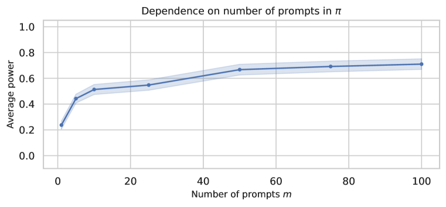
C.3 Extension: comparing two-sample and approximate goodness-of-fit tests
In §2, we assumed only sample access to both the reference distribution and API . An alternative problem setup might give the auditor privileged access to to evaluate probabilities for arbitrary (prompt, completion) pairs. Here, we compare the performance of two-sample tests to goodness-of-fit tests that leverage this privileged setting.
In an extreme case, evaluating probabilities is free – the auditor can fully describe for all completions . Then goodness-of-fit tests, like the one-sample statistic, can be used to compare observed counts in to expected counts under :
| (12) |
However, in practice, evaluating for all and all is intractable: as a concrete example, for our language modeling task on Llama-3, . A more realistic scenario is that the auditor can only evaluate for the observed in . This leads to an approximation of the goodness-of-fit test statistic:
| (13) |
We take a similar strategy for the one-sample test
| (14) | |||
the Pearson test
| (15) | |||
and the truncated test (Balakrishnan & Wasserman, 2018)
| (16) | |||
The only goodness-of-fit test that we consider which is unaffected by the approximation is the likelihood ratio test:
| (17) |
Figure 9 plots sample complexities of these (approximate) goodness-of-fit tests alongside the two-sample tests evaluated in the main text. The best goodness-of-fit tests outperform their two-sample counterparts in the extremely low-sample regime (), but this trend reverses as increases. This is surprising — in theory, we would expect probability access to only increase power. These results suggest that the approximations compensating for limited evaluation budget can introduce bias, reducing the power of goodness-of-fit tests. We leave to future work ideas for the correction of this bias.
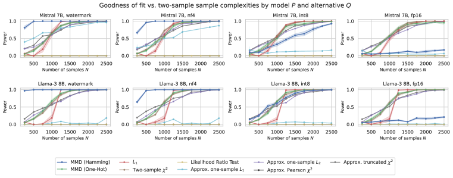
C.4 Extension: asymmetric sampling costs
In some cases, it may be significantly less expensive to sample from one distribution than the other. For example, the auditor may have unlimited compute to sample from the null distribution , but limited monetary budget to sample from the API . In these cases, we show that it is possible to achieve slight power gains by increasing the sample size of the cheaper distribution, even while keeping the sample size of the expensive distribution fixed. Figure 10 fixes and varies between and . All test statistics see some increases in power, with the test seeing surprisingly large gains.
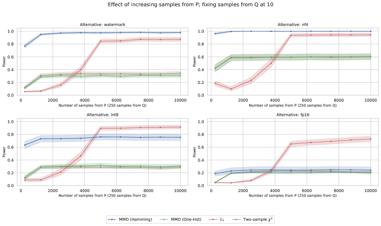
C.5 Permutation procedure
Results in the main text simulate the test statistic’s empirical distribution under the null by sampling datasets and both from . Here we validate these trends by conducting the same tests using a permutation procedure to estimate p-values (see Appendix A.2). Figures 11, 12, and 13 repeat the sample complexity, length, and asymmetric sampling cost experiments, but use the permutation procedure to estimate p-values. Because of the computational complexity of this step, we use permutations, estimate power using simulations, and only test Mistral 7B and Llama-3 8B. We observe that the permutation procedure maintains similar power levels to the bootstrap method, and trends from the previous figures are replicated.
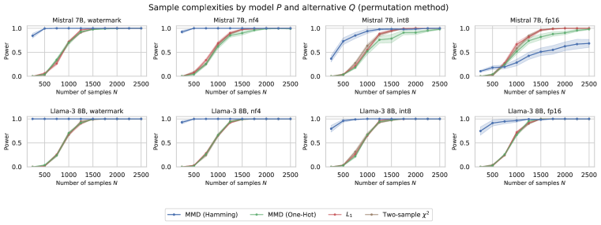
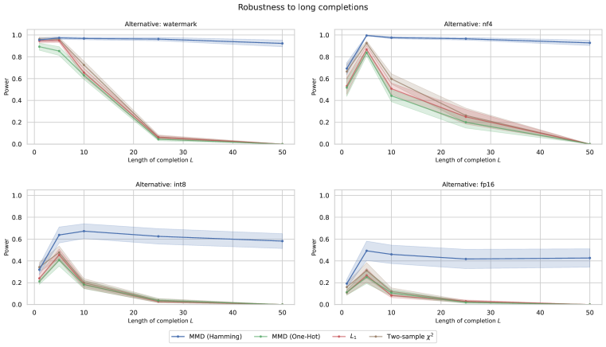
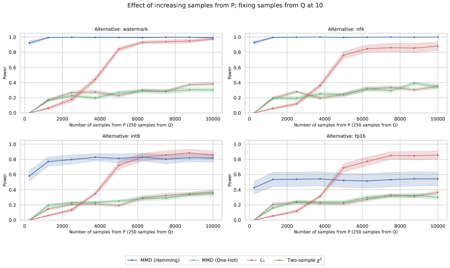
| Wikipedia | HumanEval | UltraChat | ||||||
|---|---|---|---|---|---|---|---|---|
| 3 8B | 3.1 8B | 3 70B | 3.1 70B | 3 8B | 3.1 8B | 3 8B | 3.1 8B | |
| watermark | 0.30 | 0.00 | 0.07 | 0.03 | 0.40 | 0.85 | 0.06 | 0.38 |
| int8 | 0.07 | 0.00 | 1.00 | 0.96 | 0.01 | 0.45 | 0.01 | 0.03 |
| nf4 | 0.09 | 1.00 | 1.00 | 1.00 | 1.00 | 1.00 | 1.00 | 1.00 |
| fp16 | 0.02 | 0.01 | 0.00 | 0.01 | 0.00 | 0.02 | 0.00 | 0.04 |
| fp32 | 0.01 | 0.00 | 0.00 | 0.00 | 0.00 | 0.10 | 0.01 | 0.04 |
C.6 Composite null
In §5, we use a composite null hypothesis that combines the fp32 and fp16 distributions. Table 9 shows the power of the Hamming MMD test in this composite null setting, stratified by model and prompt distribution. In general, power is reduced using the composite null. Power is generally highest on HumanEval, which collects longer completions than Wikipedia (250 vs. 50 tokens).
C.7 Additional audit results
| Wikipedia | HumanEval | UltraChat | ||||||
|---|---|---|---|---|---|---|---|---|
| 3 8B | 3.1 8B | 3 70B | 3.1 70B | 3 8B | 3.1 8B | 3 8B | 3.1 8B | |
| Amazon | 0.07 | 1.00 | 0.32 | 1.00 | 0.48 | 1.00 | 1.00 | 1.00 |
| Anyscale | 0.02 | — | — | — | — | — | — | — |
| Azure | 0.01 | 0.00 | 0.01 | 0.01 | 0.01 | 0.29 | 0.00 | 0.13 |
| Deepinfra | 0.04 | 0.00 | 0.04 | 0.00 | 0.08 | 0.19 | 0.04 | 0.09 |
| Fireworks | 0.04 | 0.04 | 0.01 | 0.01 | 0.01 | 1.00 | 0.03 | 0.90 |
| Groq | 0.03 | 0.07 | 0.02 | 0.59 | 0.01 | 0.98 | 0.05 | 0.35 |
| Perplexity | 1.00 | 1.00 | 1.00 | 1.00 | 1.00 | 1.00 | 1.00 | 1.00 |
| Replicate | 0.12 | — | 0.33 | — | 0.07 | — | 0.06 | — |
| Together | 0.01 | 0.00 | 0.00 | 0.00 | 0.00 | 0.27 | 0.01 | 0.07 |
| watermark | 0.30 | 0.00 | 0.07 | 0.03 | 0.40 | 0.85 | 0.06 | 0.38 |
| int8 | 0.07 | 0.00 | 1.00 | 0.96 | 0.01 | 0.45 | 0.01 | 0.03 |
| nf4 | 0.09 | 1.00 | 1.00 | 1.00 | 1.00 | 1.00 | 1.00 | 1.00 |
| fp16 | 0.02 | 0.01 | 0.00 | 0.01 | 0.00 | 0.02 | 0.00 | 0.04 |
| fp32 | 0.01 | 0.00 | 0.00 | 0.00 | 0.00 | 0.10 | 0.01 | 0.04 |
| 3 8B | 3.1 8B | 3 70B | 3.1 70B | |
|---|---|---|---|---|
| Amazon | ✗ | ✗ | ✗ | ✗ |
| Anyscale | ✓ | — | — | — |
| Azure | ✓ | ✓ | ✓ | ✓ |
| Deepinfra | ✓ | ✓ | ✓ | ✓ |
| Fireworks | ✓ | ✗ | ✓ | ✓ |
| Groq | ✓ | ✗ | ✓ | ✗ |
| Perplexity | ✗ | ✗ | ✗ | ✗ |
| Replicate | ✓ | — | ✓ | — |
| Together | ✓ | ✓ | ✓ | ✓ |
| 3 8B | 3.1 8B | 3 70B | 3.1 70B | |
|---|---|---|---|---|
| Amazon | 1.00 | 1.00 | 0.58 | 1.00 |
| Anyscale | 0.02 | — | — | — |
| Azure | 0.02 | 0.10 | 0.01 | 0.01 |
| Deepinfra | 0.01 | 0.04 | 0.04 | 0.01 |
| Fireworks | 0.00 | 1.00 | 0.03 | 0.00 |
| Groq | 0.01 | 0.75 | 0.00 | 0.59 |
| Perplexity | 1.00 | 1.00 | 1.00 | 1.00 |
| Replicate | 0.02 | — | 0.48 | — |
| Together | 0.01 | 0.09 | 0.00 | 0.00 |
| nf4 | 1.00 | 1.00 | 1.00 | 1.00 |
| int8 | 0.00 | 0.12 | 1.00 | 0.92 |
| watermark | 0.12 | 0.45 | 0.50 | 0.06 |
| fp16 | 0.00 | 0.00 | 0.00 | 0.00 |
| fp32 | 0.00 | 0.06 | 0.00 | 0.00 |
C.8 Comparing APIs to each other
In Figures 14 – 25, we compute the pairwise MMDs between APIs and quantized model weights for all prompt distributions (Wikipedia, HumanEval, UltraChat) and available models (Llama-3 8B, Llama-3.1 8B, Llama-3 70B, Llama-3.1 70B). We use spectral clustering with two components to discover groups of implementations. Providers that pass the audit in Table 1 are typically clustered with the null distributions and , reflecting that they are distributionally close to these nulls.
Additionally, Figure 26 shows the estimated MMDs between APIs for each of the three prompt distributions for the Llama-3.1 405B model. Due to their size, we could not sample from the released weights for this large model directly, but we can still estimate the distances between APIs for this model.
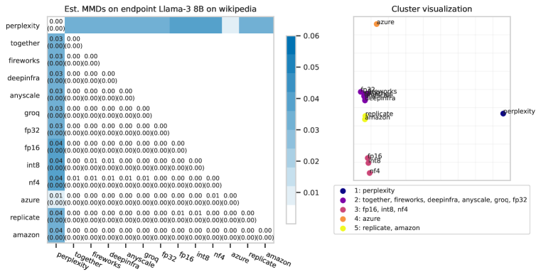
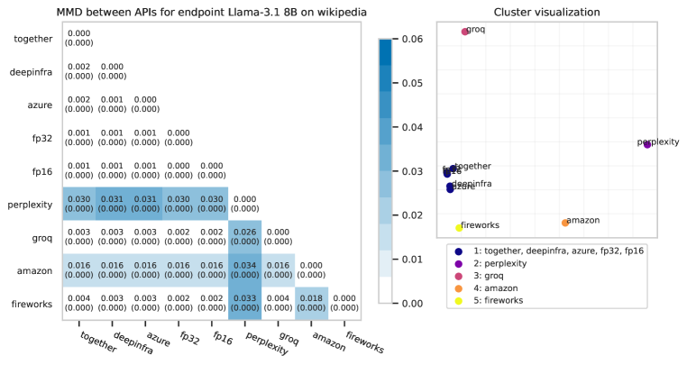
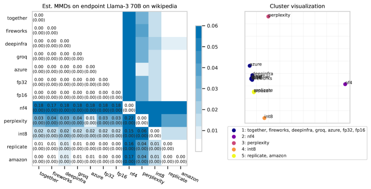
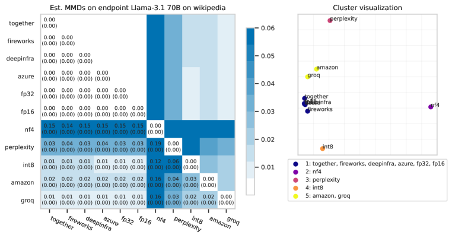
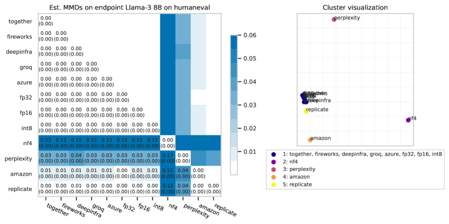
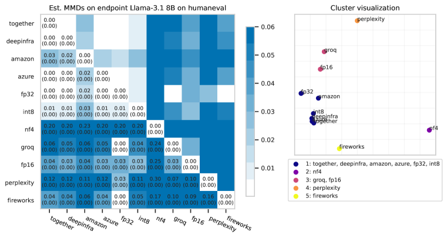
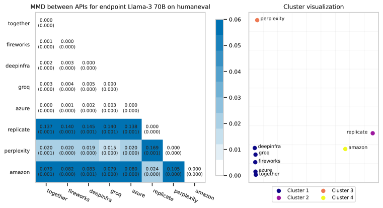
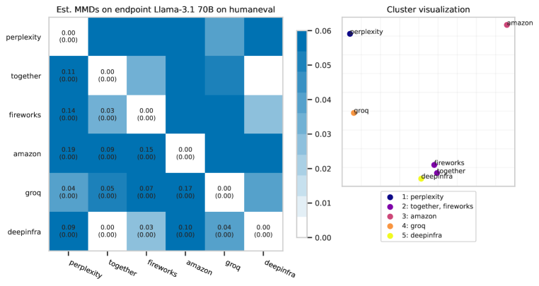
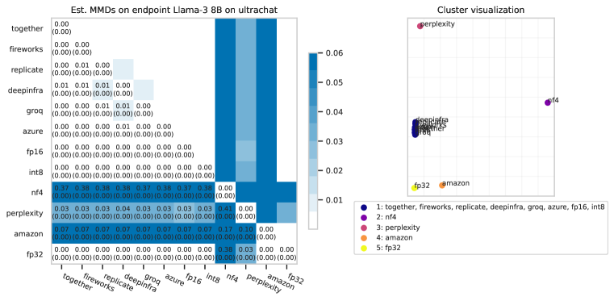
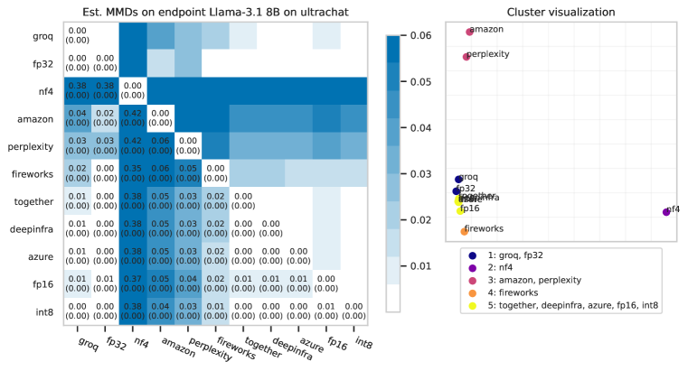
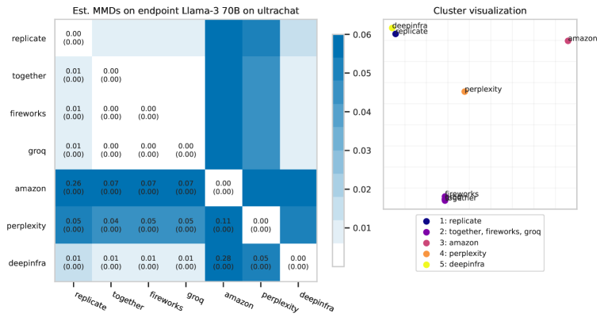
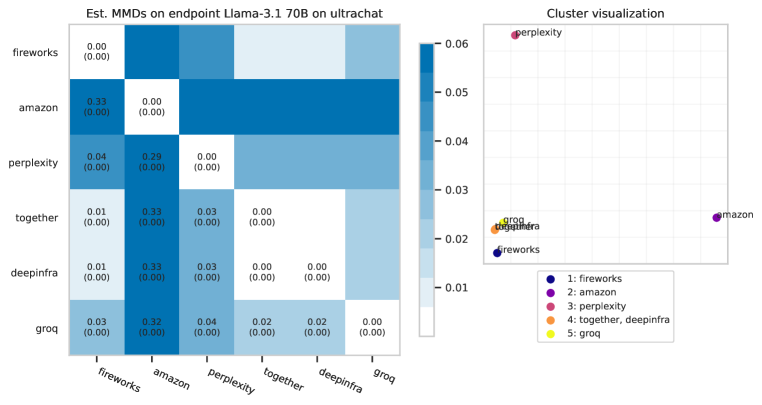
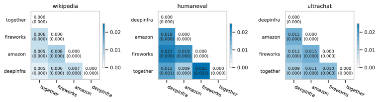
Appendix D Data samples
In this appendix, we randomly sample completions from pairs of distributions to illustrate the differences between them. In general, we observe that it is challenging to visually distinguish between samples from different distributions, especially for longform tasks. This is because each distribution produces diverse outputs. Formal statistical tests that we describe in the main text are necessary to detect these differences.
In a few cases, detected differences between distributions are also visually obvious. For example, we observe that the Llama 70B-scale models quantize poorly, and their nf4 completions are degenerate. Different language models also often differ in how they begin completions. We also observe that some APIs (in particular, Perplexity) seem to be producing lower-entropy completions than the reference distribution, suggesting some form of caching or incorrect implementation of the temperature parameter.